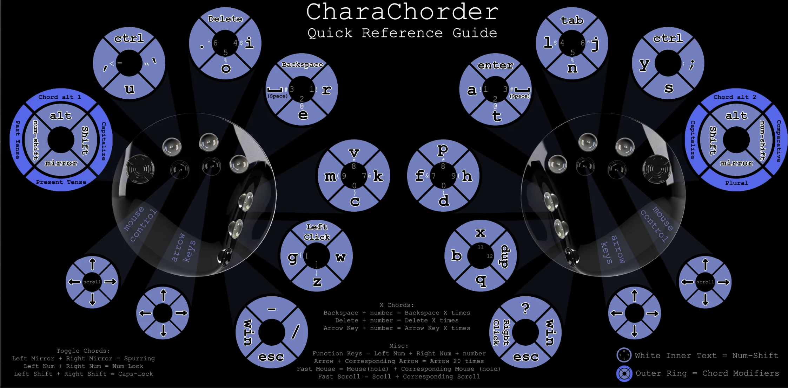

CharaChorder One
Welcome to the Official CharaChorder One guide. You can select the links below to navigate to the topics that you find most relevant.
Out of the Box
Parts
When you first receive your CharaChorder One, it will come in a black box with the CharaChorder logo on the outside. Once you open the box, you’ll find your brand new CharaChorder One inside its carrying case. You will also find an insert that includes the layout of the device and some functions that the CharaChorder One has.
Once you unzip the travel case, you’ll meet your shiny, new CharaChorder One. The CharaChorder One consists of two halves with 9, 5-way switches each, held together by a machined aluminum center bar.
The Halves
Your device will come with two “halves” which comprise the full CharaChorder One. Each half corresponds to each hand and is designed for the ergonomics and comfort of each hand. The halves are printed by injection mold and made of ABS plastic. Each half is actually two pieces which are the dome-shaped “shell” and the flat and circular “baseplate”. They are held together by 5 M3, CHECK INFO Philips screws which are under the “feet” of the device. The feet are round, rubberized CHECK INFO and help the device to have a grip on desks and other, smooth surfaces.
The left half contains the “brain” of the device, where it stores chords, layouts, and settings. It also contains a female USB-C port on the left side of the half and a 3.5mm “audio jack” port on the right side of the half (See Connections). The right half is nearly a mirror image of the left half. It has a 3.5mm “audio jack” port on the left side of the half and a no other ports (See Connections).
The Center Bar
Out of the box, your CharaChorder One will have a machined aluminum “bridge” which we can refer to as a metal bar. The metal bar is held in place by four M2x3mm screws, with two screws in each half. The metal bar is removable after having removed these four screws.
The Switches
Instead of the one-dimensional buttons that traditional keyboards use, CharaChorder levers, which we will call switches, detect motion in three-dimensions so users have access to 90 unique inputs without their fingers breaking contact with the device. The CharaChorder One switches produce a digital input, as opposed to analog. Out of the nine switches, the six silver-colored switches are crafted with bead-blasted aluminum and the three black ones are made from ABS plastic.
Each CharaChorder half has nine 5-way switches. Starting from the outside on each half and working inwards, the switches correspond to the following fingers; pinky, ring, middle, and index. The three switches on the inner-most side of each half correspond to the thumb. You can see what characters are on each switch in Layout. Additionally, there are two black switches off the “home-row” which can be accessed by the ring and middle fingers.
Note
IMPORTANT: In this manual, we will refer to switches in the following way, starting from the pinky finger and working inwards: pinky, ring, middle, index, thumb 1, thumb 2, thumb 3. The black switches below the “home-row” will be referred to as the arrow and mouse switches, where the switch further to the left on the left half of the CharaChorder is the mouse switch. Symmetrically, the mouse switch is the switch furthest to the right on the right half.
Each switch has five press-able directions. Throughout this guide, we will use cardinal directions to refer to the directions in which each switch can move, with north being forward, away from your body. Switches can move north, south, west, east and down, into the device. Please be mindful that, as part of the device’s ergonomics, each switch has a slightly different angle, so feel free to familiarize yourself with your new device.
Out of all nine switches, the pinky switch stands out from the bunch. It’s made to be flatter and wider than the other eight in order to make using it easier, since the pinky tends to be the finger with the least dexterity.
Earlier, we mentioned the five directions in which a switch can be actuated, or pressed. Aside from the four cardinal directions, each switch can be pressed down, into the device. We often refer to this press as a 3D press, since it’s not a lateral movement, but rather a movement along the Z axis of the switch. This special press requires no lateral movement in order to work, just apply force onto the switch “into” the device. Each of the five directions on a switch can be mapped to a configurable key, which can include letters, numbers, symbols, control keys and even function keys. You can see the most current list of configurable action codes in action codes CHECK INFO.
Connections
Your new CharaChorder One comes with two cables in the box; the power cable that goes out to the computer and the communication cable between the halves.
Power
The CharaChorder One is powered by a single, braided USB-C to USB-A cable, with both ends being male ends. The USB-C side of the cable fits into the USB-C port on the left side of the left half of the CharaChorder. The USB-A end of the cable is then plugged into your computer, or into a mobile device, usually with the help of an adapter. ^9cddb9
Communication
The Power Cable also doubles as a way for the CharaChorder One to communicate with your computer. For this reason, it’s important that the USB-A end of the power cable is inserted into a port on your computer that’s capable of sending and receiving data, and not just an energy port.
In between the two CharaChorder halves, there’s a single 3.5mm TRS CHECK INFO cable, commonly known as an AUX cable. This cable facilitates instant communication between the right half and the left half of the CharaChorder. However, as mentioned before, only the left half contains the “brain” of the CharaChorder which holds your chord library, layout, and settings.
Plugging In
The CharaChorder One is plug-and-play, so it doesn’t require any additional software to work. Before plugging your CharaChorder in for the first time, it’s important to make sure that the TRS cable is fully plugged into both halves. With constant movement, it’s possible that this cable becomes slightly dislodged which could lead to issues with the device, so it’s a good idea to check these connections when moving the CharaChorder to a new computer.
If not done already, make sure that the USB-C side of the power cable is plugged into the left half of the CharaChorder. It’s important to be certain that the cable is plugged all the way in, otherwise, the CharaChorder might not function as intended.
Warning
IMPORTANT: During your first time plugging your CharaChorder in, and every time thereafter when you have realtime feedback enabled, it’s recommended that you have your cursor in a blank typing space. The CharaChorder has a welcome message that can send instructions to your computer that are not intended by the user. This feature can be disabled in the GTM.
After making sure that all the cables on the CharaChorder are properly plugged in, connect the USB-A side of the power cable into a USB-A port on your computer. Upon connecting, you may notice the following things: - If your cursor is somewhere where text can be entered… - You will first see the text “Loading ### Chordmaps” highlighted, and a few moments later, “CCOS is ready.” - Regardless of whether or not your cursor is somewhere where text can be entered… - You will be able to see a small, lime colored light inside the space that holds the USB-C port on the left half of the CharaChorder One.
If you have realtime feedback enabled, once you can see the highlighted text that reads “CCOS is ready”, your device is ready to be used.
Note
IMPORTANT: Realtime feedback is enabled by default on new CharaChorder devices.
Getting Started
There are a few steps that you’ll likely want to take if this is your first time using your CharaChorder device. In the following section, we will update your device, explain navigation in the GTM, and demonstrate the default layout on your new device.
Updating your Device
Warning
IMPORTANT: If your device shipped from our warehouse before 2023, it’s possible that it is running an obsolete firmware. You can read instructions on how to upgrade your device to our new CCOS here. If your device is not running CCOS, you will be unable to follow the steps below to update your device.
Checking your Device’s Firmware
You can check your device’s current firmware by following the steps below:
On a chromium based browser, such as Chrome, go to the CharaChorder Device Manager
Click “Connect”
When the popup box comes up that reads “www.iq-eq.io wants to connect to a serial port”, choose your CharaChorder device, then click the blue “connect” button
After following the above steps, you can find your firmware version right above the “Connect” button. It will read something like this:
Device ID CHARACHORDER ONE M0 --- CCOS VERSION 1.0.1
Updating the Firmware
If you find that your device is not running the latest firmware version, you can follow the steps below to update your device. You can check which is the latest firmware release by visiting this site.
Warning
IMPORTANT: Before performing the below steps, please make sure that you have a backup of your layout as well as a backup of your chord library. The update might reset those, so it’s important that you keep backup files handy. For instructions on how to restore backed up files, visit the Backups section. The update might also reset some of your GTM settings. Be sure to write down settings before you update.
On a chromium based browser, such as Chrome, go to the CharaChorder Device Manager
Click “Connect”
When the popup box comes up that reads “www.iq-eq.io wants to connect to a serial port”, choose your CharaChorder device, then click the blue “connect” button
Click “Bootloader”. Your CharaChorder will now appear as an external storage device on your computer’s file explorer or Finder app. It might be named one of the following: “Arduino”, “Seeduino”, or “CharaChorder One”.
Download your update file from this site: https://www.charachorder.com/pages/update-your-firmware
Warning
***IMPORTANT: Make sure that the file you download is named exactly like this: CURRENT.UF2 . If there are any other characters in the file name, the file will not work. “CURRENT.UF2(1)” will NOT work. Additionally, the file name is case sensitive; all letters must be capitalized.
Copy the CURRENT.UF2 file that you just downloaded and paste it into the CharaChorder drive that we found in step 4
When your computer asks you how you would like to resolve the issue of two files with the same name, select “Replace file”.
At this point, your CharaChorder One will automatically reboot and the CharaChorder drive will have disappeared. Congratulations! You have successfully updated your device. You can check your device’s firmware version by following the steps here.
Understanding the Settings
The CharaChorder One has settings that are user-configurable. Since the device is plug-and-play, you don’t need any software to edit the device’s settings; all you need is a place to type text. We call these settings the Generative Text Menu, or GTM for short.
You can access the GTM by chording both pinkies north on any space that allows text entry such as a notepad app. For an explanation on chords and how to perform them, visit the Chords section.
Once you perform the chord to call up the GTM, your CharaChorder will type out the menu and its options. It will look something like this:
CharaChorder GTM [ >K<eyboard || >M<ouse || >C<hording || >D<isplay || >R<esources ]
Navigation around this menu is based on letter-presses. In the example
above, you can select the desired submenu by pressing the letter between
the angle brackets (for example: >K<) in your target submenu on your
CharaChorder One. In the example above, you would press K for
Keyboard, M for Mouse, C for Chording, D for Display, and
R for Resources.
In some submenus, you will see numeric values. In order to increase or decrease these, you can use the arrow keys on your CharaChorder One.
CharaChorder > Chording > Press Tolerance [ Use up/down arrow keys to adjust: 25ms ]
You can read an explanation on all of the settings on your CharaChorder device here.
Learning the Layout
The default CharaChorder layout, which we will refer to as the CC English layout, has been designed to favor bigrams and trigrams commonly used in the English language while making the letters accessible for a logical choice of lexical. You can find the map below.
{kind=link}
Layers
The CharaChorder One has 3 layers: the base layer called the A1 layer, the secondary layer referred to as A2, and the tertiary layer named A3. Being as the CharaChorder One has 9 switches on each half, and taking into account that each switch can access 5 different positions, and considering that each layer has access to all of those 9 switches, we have over 250 assignable slots between the two CharaChorder halves.
In this section, we’ll refer only to the default CC English layout. If you have modified your layout to something different, then the next portion might not be accurate for your device. If you have purchased your device from CharaChorder, then the following is accurate to your device.
A1 Layer
The A1 layer is the main layer that is active by default. The CC English layout has all 26 letters of the English alphabet on the A1 layer so that you can access all of them without having to hold or press anything else. Your device will always be in the A1 layer upon boot.
While the A1 layer is active on the CharaChorder One by default, you can map the A1 access key, which bears the name “KM_1_R” or “KM_1_L”, on the CharaChorder-Config site or by editing the layout csv and importing it onto your device.
A2 Layer
The A2 layer, sometimes referred to as the “number layer”, is accessible with the A2 access key. In the above graphic, you’ll see this labeled as “num-shift.” In the Key remapping reference guide, this key has the name “KM_2_L” and “KM_2_R”, one for each side of the CharaChorder. Additionally, on the webtool CharaChorder-Config, this key is also assignable by the names “KM_2_L” and “KM_2_R”.
By default, the A2 Layer is accessible by pressing and holding either pinky finger outwards, that is, west on the left pinky or east on the right pinky. You do not have to hold them both, only one is required. Any key that is on the A2 Layer can only be accessed by pressing and holding the A2 Layer access key along with the target key. You do not need to chord the keys together; it’s only required that the A2 Layer access key is pressed while the target key is pressed.
Note
EXAMPLE: On the CC English layout, you can access the number
4 by pressing and holding the right pinky to the east and the
left middle finger to the east.
A3 Layer
The A3 layer, sometimes referred to as the “function layer”, is accessible with the A3 access key. This key is not in the above [[CharaChorder One layout card.webp|graphic]], and instead is accessible by pressing and holding either pinky down, into the device. In the Remapping Reference Guide, this key has the name “KM_3_L” and “KM_3_R”, one for each side of the CharaChorder. Additionally, on the webtool CharaChorder-Config, this key is also assignable by the names “KM_3_L” and “KM_3_R”.
By default, the A3 Layer is accessible by pressing and holding either pinky finger down. You do not have to hold them both in order to access the A3 layer. Any key that is on the A3 Layer can only be accessed by pressing and holding the A3 access key, along with the target key. You do not need to chord the keys together; it’s only required that the A3 layer access key is pressed while the target key is pressed.
Note
EXAMPLE: On the CC English layout, you can access the MISSING by pressing and holding the left pinky down and the right
Shift Modifier
On top of the three aforementioned layers, the Shift key, which is a modifier, can be used to access some extra keys. The Shift keypress works just like it would on a traditional keyboard. You can capitalize letters and access symbols attached to numbers. This works with any key on any layer, just like other modifiers (such as Ctrl and Alt). The Shift modifier output is currently controlled by the Operating System that your CharaChorder is plugged to, and it is not possible to customize their outputs.
In the above [[CharaChorder One layout card.webp|graphic]], you’ll see the Shift key labeled as “Shift”. In the Key Remapping Reference Guide, this key has the name “Left_Shift” and “Right_Shift”, one for each side of the CharaChorder. Additionally, on the webtool CharaChorder-config, this key is also assignable by the names “Left_Shift” and “Right_Shift”.
By default, the Shift is accessible by pressing and holding either pinky finger inwards, that is, east on the left pinky or west on the right pinky. You do not have to hold them both, only one is required. Any key that requires the Shift Modifier can only be accessed by pressing and holding the Shift key along with the target key. You do not need to chord the keys together; it’s only required that the Shift key is pressed while the target key is pressed.
Note
EXAMPLE: On the CC English layout, you can access the capital
A by pressing and holding the left pinky to the east and the
right index finger to the west.
On the CC English layout, you can access the @ symbol by pressing
and holding both pinkies to the east and the left index south.
Configurability
The CharaChorder One’s layout is configurable, which means that you can remap almost all keys. Though the CC English layout has been optimized for writing in English by chentry and chording, some users may choose to remap their device’s layout to better suit their personal needs. For a thorough explanation on how remapping works and how to remap your device, visit the remapping section
Practice
Now that you’re familiar with your new CharaChorder device, it’s time to use it! Head over the the training section for instructions on how to get started with learning your device. If you want to just jump in without having to read a minute longer, head on over to our training website; https://www.iq-eq.io/#/